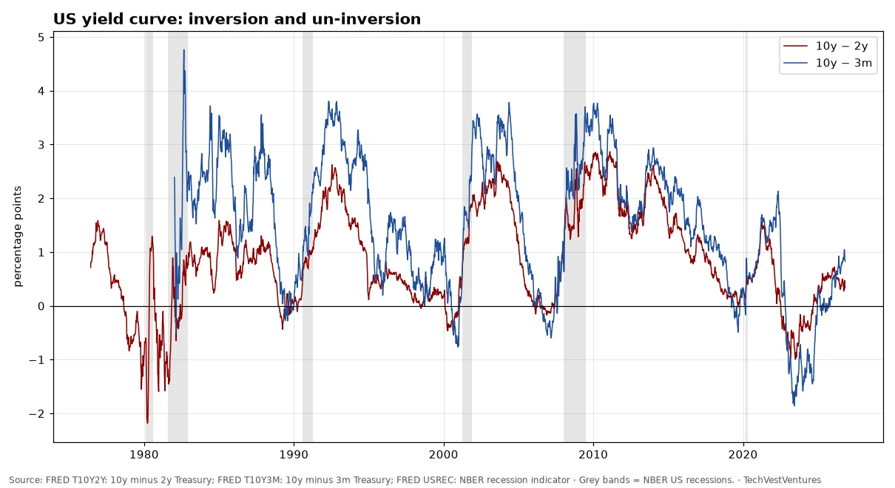
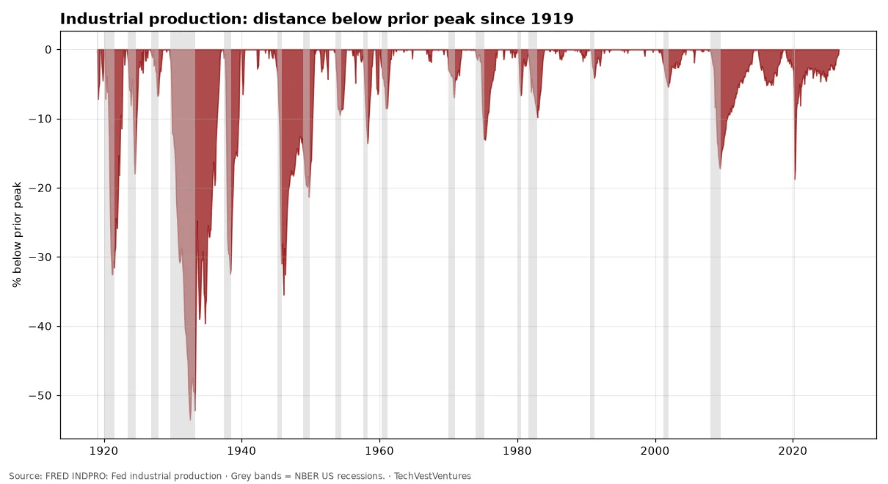
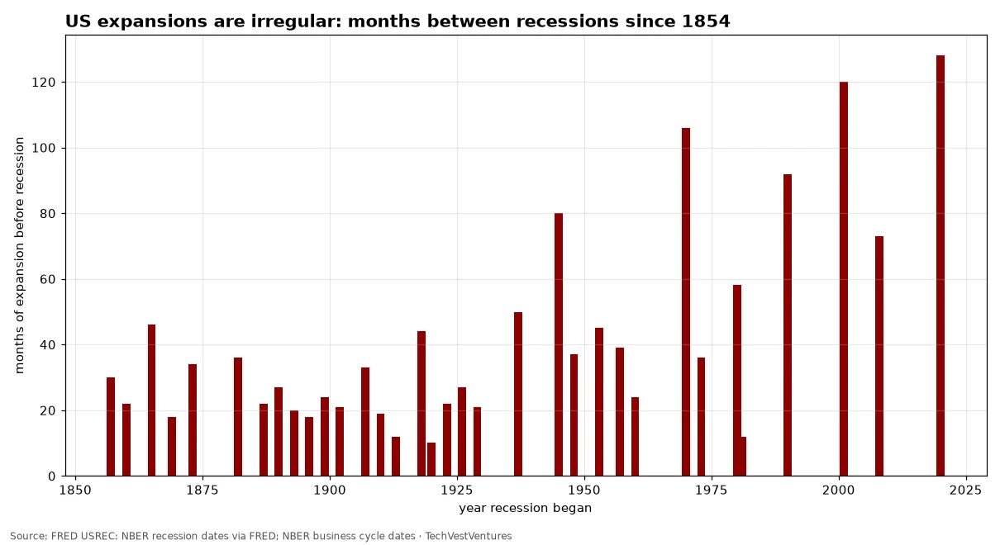
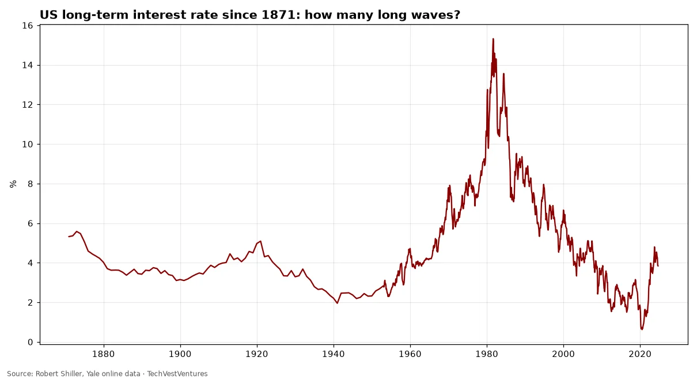
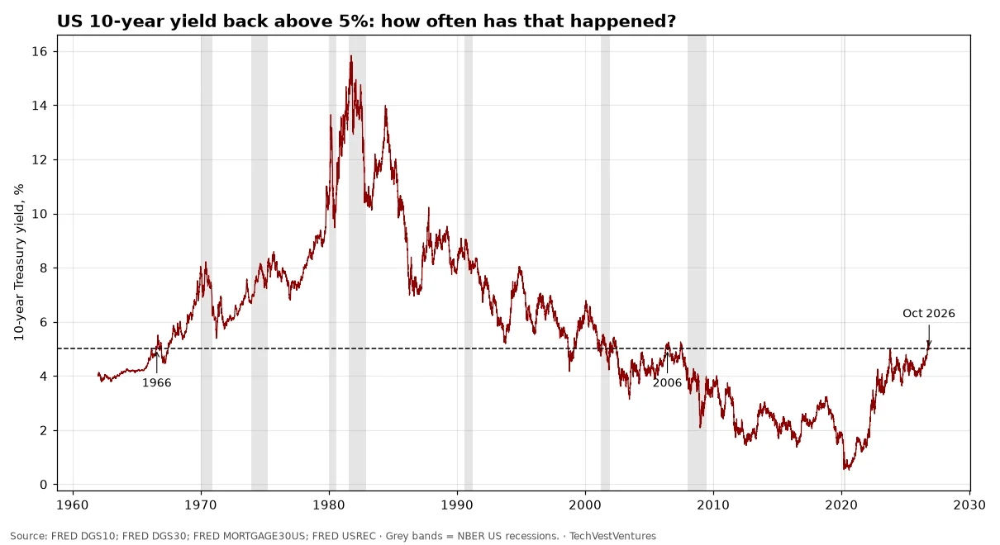

Q12. Cycle Counts

Robert Shiller's cyclically adjusted P/E for the S&P Composite. Long-run mean 17.5. Peaks: 32.6 in 1929, 44.2 in 1999, 38.6 in 2021; last value in the public file 35.2 (Sep 2024). Pattern count: only three prior readings above 30 (1929, 1997–2001, 2021) — 3 cycles, so by Michael Hentschel's rule a 'repeat' is suggestive, not proven. Note: the public Yale file we could reach ends Sep 2024.

10-year minus 2-year Treasury spread +0.31 pts and 10-year minus 3-month +0.78 pts on Oct 23, 2026. The 10y–2y curve inverted from July 2022 and turned positive again in Aug 2024. Since 1976 every recession was preceded by 10y–2y inversion, and recessions have usually begun after the curve un-inverts. Counting: 1978, 1988, 1998–2000, 2006, 2019 inversions — 5 episodes before the 2022 one, so this is one of the better-supported repeat patterns, though lead times varied from about 6 to 24 months and 2022's inversion has not (yet) been followed by an NBER recession.
Sources: FRED T10Y2Y: 10y minus 2y Treasury FRED T10Y3M: 10y minus 3m Treasury FRED USREC: NBER recession indicator

The Great Depression drop (-54% by Jul 1932) dwarfs every later slump: 1938 (-32%), 1945 demobilization (-35%), 2009 (-17%) and 2020 (-19%). Latest: 0.1% below the prior peak in Sep 2026. One true depression in a century of data is too few to model its return.

NBER has dated 35 US recessions since 1854. Expansions before them ranged from 10 to 128 months (median 31). The uneven spacing is why calendar-based 'cycle' forecasts are weak: there are many cycles, but no stable period.
Sources: FRED USREC: NBER recession dates via FRED NBER business cycle dates

Long-term US government bond yield from Shiller's data. Major troughs around 1899, 1941 and 2020; one great peak in 1981 (15.3%). In 150 years that is roughly two to two-and-a-half long (Kondratieff-length) cycles — fewer than the more-than-3 repetitions Michael Hentschel requires before treating a long-wave pattern as evidence.
Sources: Robert Shiller, Yale online data

The 10-year Treasury closed at 5.13% on Oct 21 and 4.96% on Oct 22, after first crossing 5% in mid-September; the 30-year is 5.29% and the 30-year mortgage rate 7.32%. Cycle count: since 1962, the 10-year has risen through 5% after at least 12 months below it only twice before, in July 1966 (followed by a 15-year bond bear market and the 1969-70 recession) and May 2006 (followed by the 2008 recession). That is 2 precedents, fewer than the 3+ repeats Michael Hentschel requires, so 'every time yields cross 5%, a recession follows' is a stab in the dark, not a pattern.
Sources: FRED DGS10 FRED DGS30 FRED MORTGAGE30US FRED USREC

Monthly 10-year government bond yields (OECD via FRED), latest Sep 2026 (Italy Aug). Japan's 3.05% is the highest since 1996; the UK's 5.24% and the US 4.99% are the highest since mid-2007; France since 2008 and Germany since 2009. The IMF's Oct 13 blog says the G7 average 10-year yield is the highest in nearly two decades and warns of the fiscal stakes. Cycle count: since 1990 the US 10-year has made three major cyclical peaks (late 1994, early 2000, mid-2007); two were followed by a US recession within about 1-2 years (2001, 2008-09) and one by a soft landing (1995). Three cycles with a 2-of-3 hit rate is right at Michael Hentschel's threshold, so read it as a warning, not a prediction.
Sources: FRED IRLTLT01USM156N (and DE, FR, IT, JP, GB, CA) IMF blog, Oct 13, 2026